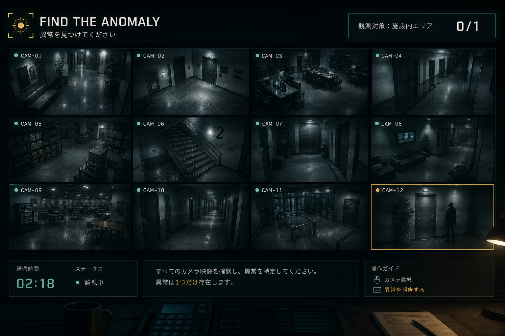

監視カメラを目で探すあのゲーム。
データの届き方を変えると、難易度がチートになる。
12画面を同時監視。異変は小さく、すぐには分からない——視線を動かし続けるしかない。
「ちょっと強い」。異常行は色で分かるが、他カメラのログに挟まって流れる。順に追えば見つかる——切替監視よりは楽。
目を動かさなくていい。意味のある変化だけが届く——監視ゲーとしてはマジチート。
カメラ映像だけでは、まだ誰も気づけていない…
難易度：マジチートセンサが増えるほど人間の目視は不利。だから「届き方」の設計が勝負になる。
平均は正常でも、“いま”は溶ける。ダイジェスト録画だけ渡される感じ。
全センサの生データが流れる。情報量↑。探すのはまだあなた。
変化速度・値の異常など、意味のある変化だけ通知。